초음파비파괴검사산업기사(구) (2002-09-08 기출문제)
1과목: 초음파탐상시험원리
1. 자분탐상시험법에 대한 설명으로 틀린 것은?
- 거의 모든 재료에 적용할 수 있다.
- 철강재료가 자화되면 결함으로 인해 누설자속이 생긴다.
- 결함과 자속의 방향이 평행에 가까울수록 누설자속이 작아진다.
- 자화전류로 교류를 사용하면 표피효과에 의해 표면결함 검출에 유리하다.
(정답률: 알수없음)

2. 다음 중 초음파의 감쇠에 영향을 미치는 인자들로만 조합된 것은?
- 흡수, 굴절, 반사
- 굴절, 흡수, 회절
- 굴절, 반사, 산란
- 산란, 흡수, 음파의 확산
(정답률: 알수없음)
3. 초음파가 재료 내부를 진행할 때 음속과 재료의 밀도로 나타낼 수 있는 재료 고유의 물성치를 무엇이라 하는가?
- 반사계수
- 음향 임피던스
- 탄성계수
- 프아송비
(정답률: 알수없음)
4. 다음 중 수정진동자의 빔 분산각을 구하는 공식은? (단, D : 진동자 직경, λ : 파장, F : 주파수, θ : 빔 분산각)
- sinθ = D/2
- sinθ = Fλ/D
- sinθ = F·λ
- sinθ = 1.22λ/D
(정답률: 알수없음)
5. 종파의 특성이 아닌 것은?
- 초음파중에서 속도가 제일 빠르다.
- 같은 주파수에서 가장 긴 파장을 갖는다.
- 같은 주파수에서 투과력이 제일 좋다.
- 입자의 운동은 파의 진행방향에 대해 수직이다.
(정답률: 알수없음)
6. 다음 중 초음파 탐촉자의 내부 구성요소에 해당되지 않는 것은?
- 진동자
- 쐐기(Wedge)
- 흡음재
- 범퍼(Bumper)
(정답률: 알수없음)
7. X선을 발생시킬 때 빠른 속도의 열전자를 급감속시키는 고체 부분을 무엇이라 하는가?
- 초점컵
- 음극
- 양극
- 필라멘트
(정답률: 알수없음)
8. 해당 재질에 대한 음속 보정을 하지 않은 초음파탐상기로 미리 영점조정을 행한 다음 실제의 두께가 10.0mm인 부위의 알루미늄의 두께를 측정하였더니 9.4㎜로 표시되었다. 동일 조건으로 알루미늄의 다른 부위를 측정하여 28.2㎜로 표시되었다면 실제의 두께는 몇 ㎜인가?
- 15.0
- 25.0
- 30.0
- 35.0
(정답률: 알수없음)
9. 다음 중 종파와 횡파의 차이점은?
- 정량적인 측정
- 입자의 운동과 전파방향
- 정성적인 측정
- 증폭도
(정답률: 알수없음)
10. 초음파의 파장을 변화시키기 위해서는 다음에 열거된 사항중 무엇을 변화시켜야 하는가?
- 주파수
- 탐촉자 직경
- 공급전압
- 펄스 반복율
(정답률: 알수없음)
11. 비파괴검사의 기본적 사항에 대해 설명한 것으로 올바른 것은?
- 비파괴시험은 적절한 시험방법을 선택하면 재료, 부품, 구조물 등의 종류에 상관없이 적용 가능하다.
- 비파괴시험은 시험 대상물을 절삭하고 가동하는 것은 허용하고 있다.
- 비파괴시험은 무자격자라도 충분한 성능을 갖는 시험기기를 이용하면 누구나 검사할 수 있다.
- 비파괴시험은 검토된 시험절차서와 무관하게 적절한 시험개소(個所)를 선정하여 실시하면 된다.
(정답률: 알수없음)
12. 탐촉자에 대한 다음 설명중 올바른 것은?
- 경사각 탐촉자는 쐐기의 온도가 변해도 굴절각이 변하지 않도록 제작되어 있다.
- 탐촉자의 댐퍼는 분해능을 좋게하는 기능도 한다.
- 경사각 탐촉자의 진동자는 횡파를 발생시킨다.
- 가변각 탐촉자는 횡파만을 발생시킬 수 있다.
(정답률: 알수없음)
13. 음향 이방성(異方性)이 있는 재료를 초음파탐상할 때에 대한 설명으로 틀린 것은?
- 강재중에서 초음파의 음속이나 감쇠 등의 초음파전파 특성이 탐상방향에 따라 다른 재료를 음향이방성을 갖는 재료라 부른다.
- 압연강판과 같이 주 압연방향(L방향)과 이것에 직각인 방향(C방향)사이에 초음파 전파특성이 현저히 다른 재료에는 음향 이방성에 대한 점검이 필요하다.
- 음향 이방성을 갖는 재료의 탐상에는 공칭 굴절각이 70° 인 탐촉자를 사용한다.
- 음속비의 측정에 의해 음향 이방성을 점검할 경우 음속비가 1.02를 넘을 때 음향 이방성이 있는 것으로 간주한다.
(정답률: 알수없음)
14. 여러 종류의 비파괴시험 특징에 대해 기술한 것으로 다음 중 올바른 것은?
- 초음파탐상시험은 용접부의 블로홀 검출에 적용할 수 있다.
- 자분탐상시험은 섬유강화플라스틱(FRP)의 접착불량부분의 검출에 잘 이용된다.
- 침투탐상시험은 용접부의 비파괴시험에 적용되지 않는다.
- 와전류탐상시험은 세라믹관 내외면의 결함검출에 적합한 시험방법이다.
(정답률: 알수없음)
15. 다음은 비파괴시험의 실시목적에 대해 기술한 것이다. 올바른 것은?
- 비파괴시험은 재료나 부품, 구조물 등을 파괴하는 것도 포함하며, 결함이나 내부구조 등을 조사하는 시험이다.
- 비파괴시험으로 결함을 검출하는 경우 결함의 합부(合否)기준을 명확히 하고, 적절한 시험방법과 시험조건을 선정하지 않으면 안된다.
- 비파괴시험의 주목적은 대량생산의 향상에 있다.
- 비파괴시험에서 원리적인 차이는 검출정도(精度)에 영향은 미치지 않으므로 어떤 방법을 이용할 것인가에 대해서는 검토하지 않아도 된다.
(정답률: 알수없음)
16. 초음파 탐촉자의 감도를 높이기 위한 방법중 옳은 것은?
- 수직탐촉자를 사용한다.
- 직경이 큰 진동자를 사용한다.
- 탐촉자의 밴드폭을 증가시킨다.
- 기본공진수가 되도록 진동자를 제작한다.
(정답률: 알수없음)
17. 탐촉자에서 분해능과 감도에 영향을 미치게 하는 직접적인 요소는?
- 접지링
- 충진재
- 연결체
- 동조코일
(정답률: 알수없음)
18. 표준시험편이나 대비시험편을 이용하여 CRT의 횡축을 측정거리 100㎜로 조정후, 수직법으로 탐상하여 4번째의 저면반사파가 100mm 위치의 눈금과 일치하였다면 시험체의 두께는?
- 20㎜
- 25㎜
- 30㎜
- 40㎜
(정답률: 알수없음)
19. 다음 중 탐촉자의 성능을 판단할 때 고려해야 할 사항이 아닌 것은?
- 감도
- 불감대
- 분해능
- 진동자 크기
(정답률: 알수없음)
20. 초음파탐상시험의 수직탐상에 대해 기술한 것이다. 올바른 것은?
- 동일 결함으로부터의 에코가 CRT상에 나타나는 위치는 파장의 장단에 관계없다.
- 결함에코의 위치로부터 결함크기를 알 수 있다.
- 저면에 의한 다중반사 도형으로부터 시험체의 밀도를 알 수 있다.
- 결함이 없으면 CRT상에는 항상 저면에코만이 나타난다.
(정답률: 알수없음)
2과목: 초음파탐상검사
21. 그림의 탐상도형에 대응하는 CRT표현 결과는? (단, 측정범위는 모두 동일하다.)
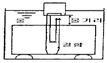
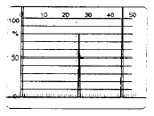
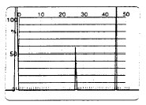
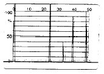
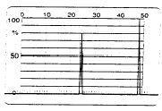
(정답률: 알수없음)
22. 용접부탐상시 초음파 탐촉자의 주파수를 선정할 때 옳은 설명은?
- 표면거칠기가 클 때는 높은 주파수
- 시험체의 결정입이 클 때 높은 주파수
- 분해능을 높이기 위해서는 높은 주파수
- 탐상속도를 높이기 위해 높은 주파수의 작은 탐촉자
(정답률: 알수없음)
23. 강판을 수직탐상하여 그림과 같이 결함을 검출했다. 6dBdrop에 의해 나타난 탐촉자 중심의 이동거리는 80mm이고, 결함 깊이는 15mm 이다. 결함의 실제 길이는 얼마로 추정되는가? (단, 사용된 탐촉자 : 직경 10mm, 5MHz, VL(강)=5900 m/sec)
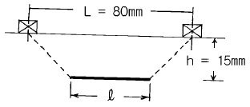
- 80.0mm
- 78.9mm
- 77.8mm
- 75.6mm
(정답률: 알수없음)
24. 경사각탐촉자 만이 갖는 특유한 성능에 해당하는 것은?
- 감도
- 분해능
- 접근한계길이
- 불감대
(정답률: 알수없음)
25. 초음파탐상시험시 높은 주파수를 사용하였을 때 나타나는 특성으로 옳은 것은?
- 속도가 빨라진다.
- 파장이 길어진다.
- 투과력이 낮아진다.
- 빔퍼짐각이 커진다.
(정답률: 알수없음)
26. 알루미늄에 대한 횡파의 음향 임피던스는 8.4x106kg/m2sec이다. 이 재료에서의 횡파속도가 3130m/sec일 때 알루미늄의 밀도는 얼마인가?
- 2700kg/m3
- 270kg/m3
- 8400kg/m3
- 840kg/m3
(정답률: 알수없음)
27. 똑같은 크기의 결함이 있는 경우 다음 중 초음파탐상시험에 의해 가장 발견하기 쉬운 결함은?
- 시험재 내부의 어떤 구형의 결함
- 초음파 진행 방향에 평행인 균열
- 초음파 진행 방향에 수직인 균열
- 이종 물질의 혼입
(정답률: 알수없음)
28. 초음파탐상시험의 수직탐상에서 탐상목적과 탐상방향에 관한 설명중 올바른 것은?
- 초음파의 전파방향에 평행하게 넓게 퍼져있는 결함으로부터의 에코높이는 높게 검출하는 것이 용이하다.
- 결함을 가장 잘 검출하는 방향은 일반적으로 결함의 투영면적이 최대로 되는 방향이다.
- 단조재에서는 주조시의 결함이 단조에 의한 소성변형에 따라서 변형하는 것이 되기 때문에 결함의 방향등은 추정할 수 없다.
- 단강품에 발생하는 결함은 탐상이 가장 용이한 방향에서 수직탐상만에 의해 모두 검출할 수 있다.
(정답률: 알수없음)
29. 다음 중 다른 진동모드로 변환이 가장 쉬운 파의 종류는?
- 종파
- 횡파
- 판파
- 표면파
(정답률: 알수없음)
30. 판두께 19mm강판의 맞대기 용접부를 5C10x10A70(STB 굴절각 70.0° )을 사용하여 탐상하기 위해 STB-A2로 탐상감도를 조정하고 검출레벨을 L검출레벨에 선정하여 탐상하였을 때 빔진행거리 59mm의 위치에서 에코높이가 70%의 결함에코가 검출되었다. 이 결함에 대한 좌우주사 그래프는 그림 A와 같고 에코높이 구분선은 그림 B와 같다. 이 결함의 결함지시 길이는 얼마인가? (측정범위 125mm이다.)
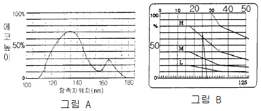
- 15mm
- 20mm
- 25mm
- 55mm
(정답률: 알수없음)
31. 초음파 탐상장치의 시간축을 100mm로 거리보정하고 DAC회로를 이용하여 거리진폭보상곡선을 그렸다. 다른 것은 조정하지 않고 200mm로 거리 보정하면 거리진폭보상곡선은 어떻게 되는가?
- 기울기가 커진다.
- 기울기의 변화가 없다.
- 기울기가 작아진다.
- 기울기의 기복이 생긴다.
(정답률: 알수없음)
32. 용접부를 경사각탐상하였을 때 에코높이는 영역 Ⅱ였다. 에코높이 구분선은 그대로 하고, 초음파탐상기의 게인을 6㏈ 올렸다. 이 때의 영역은 무엇이 되는가?
- 영역 Ⅰ
- 영역 Ⅱ
- 영역 Ⅲ
- 영역 Ⅳ
(정답률: 알수없음)
33. 초음파 속도가 약 6,000m/s인 강재에 직경이 19mm이고, 중심 주파수가 5MHz의 종파용 탐촉자로 초음파를 발생시킬 때 근거리 음장의 거리는?
- 40mm
- 75mm
- 150mm
- 300mm
(정답률: 알수없음)
34. 그림과 같은 강재 시험체를 같은 위치에서 2Z20N을 이용해서 탐상할 때에 나타나는 탐상도형은? (단, 측정범위는 250㎜이고, 탐상부분에는 결함이 없다.)
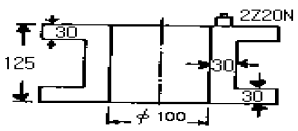
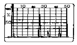
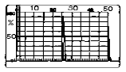
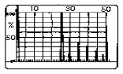
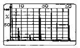
(정답률: 알수없음)
35. 탐촉자에서의 빔의 퍼짐은 주로 무엇에 좌우되는가?
- 탐상방법
- 펄스의 길이
- 주파수 및 진동자 크기
- 내마모판(wear plate)의 두께
(정답률: 알수없음)
36. 그림은 펄스반사법에서 사용되는 장비의 기본회로도이다. 빗금친 곳에 해당하는 계기 또는 system의 명칭은 무엇인가?
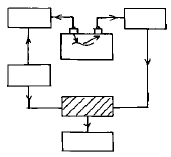
- 시간계(timer)
- 지시계(indicator)
- 증폭기(amplifier)
- 발진기(synchronizer)
(정답률: 알수없음)
37. 직접접촉법에 의해 10㎒의 탐촉자를 사용할 경우 다음 중 적합한 탐상은?
- 입상성이 조대한 재료의 탐상
- 콘크리트 시험
- 저탄소강 용접부내의 비금속 개재물 탐상
- 정기검사시 피로 균열의 탐상
(정답률: 알수없음)
38. 횡파에서 입자의 운동을 올바르게 설명한 것은?
- 파의 전파방향과 평행이다.
- 파의 전파방향과 수직이다.
- 타원형으로 입자가 운동하며, 표면에만 전파된다.
- 파의 진행방향과 45o를 이루며 전파된다.
(정답률: 알수없음)
39. 가장 기본적인 펄스-에코 방식의 초음파 장비는?
- A-Scan 장비
- B-Scan 장비
- C-Scan 장비
- M-Scan 장비
(정답률: 알수없음)
40. 주조품을 초음파탐상시험으로 검사하는데는 어려움이 따르는데 그 주된 이유는?
- 아주 작은 결정구조이므로
- 불균일한 결함 형상 때문에
- 초음파 속도가 원래 일정하지 않으므로
- 조대한 결정입도를 가지므로
(정답률: 알수없음)
3과목: 초음파탐상관련규격 및 컴퓨터활용
41. ASME Sec.Ⅴ에 의하면 용접부 검사용 표준시험편에서 두께 3인치인 시험품을 검사하기 위한 표준공의 직경은?
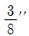
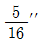
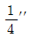
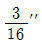
(정답률: 알수없음)
42. ASME Sec.Ⅺ에서는 초음파 탐상결과 결함지시의 합부판정은 결함의 높이, 결함의 길이, 시험체의 두께에 따라 결정된다. 아래 표의 합부판정에 따라 a/ℓ = 0.32, a/t =4.7, Y = 0.9인 결함의 Code 허용치 a/t값은 얼마인가? 또한 합격, 불합격의 여부는?
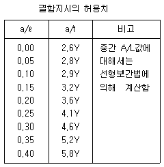
- 4.4, 불합격
- 4.6, 불합격
- 4.8, 합격
- 5.0, 합격
(정답률: 알수없음)
43. ASME Sec.V에 따라 직접 접촉법에 의한 초음파탐상시 보정시험편과 시험체 표면과의 온도차이는 얼마까지 허용되는가?
- 10℉ (5.6℃)
- 15℉ (8.3℃)
- 20℉ (11.1℃)
- 25℉ (13.9℃)
(정답률: 알수없음)
44. ASME code에서 용접부에 대한 초음파탐상시험시 주사감도는 기준감도의 최소 몇 배로 해야 하는가?
- 2배
- 3배
- 5배
- 10배
(정답률: 알수없음)
45. LAN을 구성하는 위상(Topology)의 형태로 중앙에 허브 컴퓨터를 두고 모든 PC가 주 허브컴퓨터에 연결된 방식은?
- 스타형
- 링형
- 버스형
- 트리형
(정답률: 알수없음)
46. 그림과 설명을 참조했을 때 이 절차에 해당되는 것은?
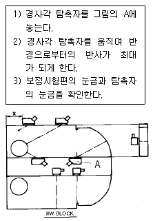
- 굴절각 측정
- 분해능 측정
- 거리진폭 교정
- 입사점 점검
(정답률: 알수없음)
47. N5Q20N 초음파 탐촉자의 의미는?
- 5° , 수정진동자, 반지름 20mm, 수직용
- 5° , 수정진동자, 지름 20mm, 경사각용
- 보통주파수 5MHz, 수정진동자, 지름 20mm, 경사각용
- 보통주파수 5MHz, 수정진동자, 지름 20mm, 수직용
(정답률: 알수없음)
48. KS B 0896에 규정된 강용접부 경사각탐상시 사용되는 경사각탐촉자의 공칭 주파수는?
- 0.5MHz
- 1MHz
- 5MHz
- 10MHz
(정답률: 알수없음)
49. API code의 대비시험편 V10(V)노치 시험편에서 노치의 각도는? (단, 그림에서 θ ° 를 나타냄)
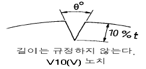
- 40° 이하
- 50° 이하
- 60° 이하
- 70° 이하
(정답률: 알수없음)
50. 한글97에서 우측과 같은 문서 양식을 만들려고 한다. 어떠한 기능을 사용해야 하는가?
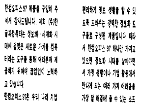
- 장평
- 자간
- 다단
- 페이지 속성
(정답률: 알수없음)
51. 다음 프로그램중에서 기능이 서로 다른 한가지는?
- Winzip
- Winrar
- Winsock
- Winarj
(정답률: 알수없음)
52. KS B 0896 부속서2 원둘레이음 용접부의 탐상방법 규정에서 시험체의 곡률반지름이 300mm일 경우 에코높이 구분선의 작성과 탐상감도의 조정용 시험편은 어느 것인가?
- A3형계 STB
- RB-A6
- RB-A8
- RB-4
(정답률: 알수없음)
53. KS B 0831에 따라 수직 탐촉자로 두꺼운 단조품을 검사하려 한다. 이 때 일반적으로 감도조정에 사용하는 표준시험편은?
- G형 표준시험편(STB-G)
- A1형 표준시험편(STB-A1)
- A2형 표준시험편(STB-A2)
- A3형 표준시험편(STB-A3)
(정답률: 알수없음)
54. KS B 0896 부속서3에서 곡률을 가진 시험재의 길이이음용 접부 경사각탐상시 탐촉자 접촉면의 곡률반지름은 시험재의 곡률 반지름의 몇 배이상 몇 배이내여야 하는가?
- 1.1배이상 3.0배이하
- 1.1배이상 2.0배이하
- 1.1배이상 1.5배이하
- 1.0배이상 1.1배이하
(정답률: 알수없음)
55. KS B ⑤34에서 초음파 탐상기의 성능측정 항목에 해당하지 않는 것은?
- 증폭직선성
- 시간축직선성
- 근거리 분해능
- 불감대
(정답률: 알수없음)
56. 압력용기용 알루미늄 합금판에 대한 초음파탐상 기준인 ASME Sec.Ⅴ SB-548에서 완전하게 저면반사의 완전감쇠(95%이상)를 만드는 불연속부를 나타내는 범위가 얼마를 초과하면 그 판을 불합격으로 하는가?
- 1인치
- 1.5인치
- 2인치
- 2.5인치
(정답률: 알수없음)
57. KS B 0897 알루미늄 용접부의 초음파 경사각 탐상시험방법과 관련하여 두께 24mm, 두께 30mm의 두 판을 맞대기 완전용입 용접하였다. 이를 초음파탐상시험하여 길이 6mm의 결함지시를 발견하였다. A종에 의한 흠의 분류는?
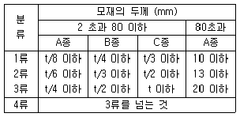
- 1류
- 2류
- 3류
- 4류
(정답률: 알수없음)
58. 다음은 국가를 나타내는 도메인들이다. 영국에 해당하는 도메인 명은?
- au
- ca
- uk
- fr
(정답률: 알수없음)
59. KS 규격에 따라 강용접부의 초음파탐상시 경사각탐촉자의 입사점, 굴절각 및 불감대 측정은 다음 중 어느 주기마다 점검하여야 하는가?
- 입사점과 굴절각은 작업개시 및 4시간마다 불감대는 작업개시마다
- 입사점과 굴절각은 작업개시 및 4시간마다 불감대는 구입시 혹은 보수를 한 직후
- 입사점과 굴절각은 작업개시 및 8시간마다 불감대는 작업개시마다
- 입사점과 굴절각은 작업개시 및 8시간마다 불감대는 구입시 혹은 보수를 한 직후
(정답률: 알수없음)
60. KS B 0896에서 대비시험편 RB-4에 대한 설명중에서 틀린 것은?
- 시험재의 두께에 따라 대비시험편의 두께가 정해진다.
- 표준구멍의 위치는 시험재 두께 T가 25mm이하일 경우를 제외하고는 T/4 위치에 뚫는다.
- 표준구멍의 지름은 시험편의 두께에 관계없이 일정하다.
- 필요한 경우 표준구멍을 규격에 덧붙여 추가할 수 있다.
(정답률: 알수없음)
4과목: 금속재료 및 용접일반
61. 아크 전류가 200A이고, 아크 전압이 30V, 무부하 전압이 60V일 때, 이 교류 용접기의 역률은 얼마인가? (단, 내부 손실은 없다.)
- 30%
- 40%
- 50%
- 60%
(정답률: 알수없음)
62. 금속중에 0.01-0.1㎛ 정도의 미립자를 수% 정도 분사시켜 입자자체가 아니고 모체의 변형저항을 높여서 고온에서의 탄성률, 강도 및 크리프 특성을 개선시키기 위해 개발된 입자분산강화금속은?
- FRM(Fiber Reinforced Metals)
- MMC(Metal Matrix Composite)
- PSM(Particle Dispersed Strengthened Metals)
- FRS(Fiber Reinforced Super alloys)
(정답률: 알수없음)
63. 그림과 같이 판 두께가 다른 맞대기 용접이음 설계할 때 맞대기 이음부의 기울기 x : y 는 다음 중 얼마로 하는 것이 가장 적합한가?
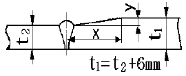
- 1.5 : 1
- 2 : 1
- 3 : 1
- 5 : 1
(정답률: 알수없음)
64. 제트기관, 가스터빈 등의 주요 부품에 사용되는 초내열 합금계가 아닌 것은?
- Ni - Cr계
- Ni - Cr - Co계
- Co - Cr - W계
- Mn - Cu - Pb계
(정답률: 알수없음)
65. 순금속에 가장 가까운 것은?
- 청동
- 주철
- 구리
- 특수강
(정답률: 알수없음)
66. 가스용접 중 산소가 반대로 흐를 때(역류)의 주요 원인이 아닌 것은?
- 토치의 기능 불량
- 팁의 막힘
- 팁과 모재의 접촉
- 산소 압력의 과소
(정답률: 알수없음)
67. 용접 균열의 발생의 감소대책 설명으로 틀린 것은?
- 필릿용접의 루트부분의 힐 균열(heel crack)은 용접 입열을 크게하여 감소한다.
- 맞대기 이음 용접시 발생되는 토 균열(toe crack)은 예열 및 강도가 낮은용접봉을 사용한다
- 고탄소강 및 저합금강의 모재열 영향부의 비드밑균열(under bead crack)은 저수소계 용접봉을 사용한다.
- 맞대기용접의 가접시 발생되는 루트균열(root crack)은 수소량의 감소를 위하여 예열 및 후열을 한다.
(정답률: 알수없음)
68. Fe3C가 큰 형태로 있을 때 구상화 처리의 가장 적합한 방법은?
- A3선 상까지 가열하고 냉각시킨다.
- A2변태점 이상의 온도에서 장시간 가열한 후 냉각시킨다.
- A1변태점 상하 20∼30℃간에서 가열과 냉각을 반복한다.
- Acm선 상까지 가열해서 냉각시킨다.
(정답률: 알수없음)
69. 물리적 성질이 아닌 것은?
- 비중
- 용융잠열
- 열팽창계수
- 충격흡수계수
(정답률: 알수없음)
70. 진공(vacuum)상태에서의 납땜(brazing)법인 것은?
- 노내 경납땜(furnace brazing)
- 아크 경납땜(arc brazing)
- 저항 경납땜(resistance brazing)
- 담금 경납땜(dip brazing)
(정답률: 알수없음)
71. 용접 이음부 밑쪽에 녹지 않은 짧은 와이어가 붙어 있는 현상으로 용융지 선단으로 용접 와이어를 빨리 공급할때 일어나는 MIG 용접 이음의 결함은 무엇이라 하는가?
- 위스커스
- 스패터링
- 용융 부족
- 용입 부족
(정답률: 알수없음)
72. 저항용접의 3대 필요조건이 아닌 것은?
- 용접전류
- 용접전압
- 통전시간
- 가압력
(정답률: 알수없음)
73. 0.4% C강을 담금질했을 때 확보할 수 있는 최고 담금질 경도(HRC)는?
- 15
- 35
- 50
- 70
(정답률: 알수없음)
74. 보기와 같은 용접부 형상의 용접 도시기호로 가장 적합한 것은?
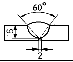
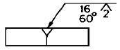
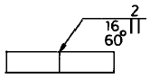
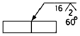
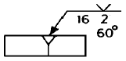
(정답률: 알수없음)
75. 불활성 가스 텅스텐 아크용접법으로 스테인리스 강판을 접합할 때, 용접 준비사항에 대한 설명으로 틀린 것은?
- 정확한 홈 가공이 필요하다.
- 용접 전 홈 부분의 청소를 철저히 한다.
- 전극봉은 토륨 텅스텐봉을 사용한다.
- 전극봉 끝은 둥글게 하여 용접 표면에 넓게 청정작용을 할 수 있도록 한다.
(정답률: 알수없음)
76. 철(Fe)의 동소변태에 관한 설명 중 옳지 않은 것은?
- 일정온도에서 급격히 비연속으로 일어난다.
- 동일물질에서 원자배열의 변화로 생긴다.
- 철의 동소변태는 A3 와 A4이며 가역적이다.
- 동소변태는 가열시 변태온도보다 냉각시 변태온도가 높다.
(정답률: 알수없음)
77. 분말야금의 소결방법에서 고온압착법에 관한 일반적인 설명 중 옳은 것은?
- 기공이 없는 소결체를 얻을 수 있다.
- 대량생산방식에 적합하다.
- 소결시간이 많이 소요된다.
- 형틀에 소요되는 비용이 상대적으로 저렴하다.
(정답률: 알수없음)
78. 전연성이 매우 커서 10-6 cm 두께의 박판으로 가공할 수 있는 것은?
- Au
- Sn
- Ir
- Os
(정답률: 알수없음)
79. 그림과 같은 격자 결함의 구조명은?
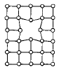
- 모자이크 구조(mosaic block)
- 공격자점(vacancy)
- 점결함(point defect)
- 격자간 원자(interstitial atom)
(정답률: 알수없음)
80. 아크 용접시 비드 시점의 불완전 용착부나 종점의 크레이터를 방지하기 위하여 사용하는 것은?
- 엔드 텝(end tab)
- 받침(backing)
- 콤비네이션 스퀘어(combination square)
- 접지 클램프(ground clamp)
(정답률: 알수없음)
자기입도 검사는 자기장을 이용하여 물체 내부의 결함을 검출하는 방법입니다. 자기장을 가해주면 물체 내부의 자기화된 입자들이 움직이면서 자기장을 방해하게 되는데, 이를 측정하여 결함을 검출합니다. 따라서 자기입도 검사는 자기화된 물질에만 적용되는 것이 아니라, 거의 모든 재료에 적용할 수 있습니다.
또한, "결함과 자속의 방향이 평행에 가까울수록 누설자속이 작아진다."와 "자화전류로 교류를 사용하면 표피효과에 의해 표면결함 검출에 유리하다."는 올바른 설명입니다.